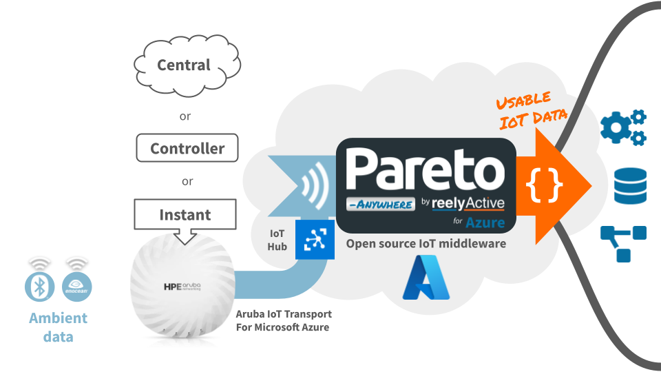

Run Pareto Anywhere for Azure with Aruba APs
Our step-by-step guide to deploy and run Pareto Anywhere as a serverless function on Azure, with HPE Aruba Networking access points as an IoT data source.
The TL;DR (Too Long; Didn't Read)
Learn how to deploy Pareto Anywhere for Azure in a single click with simplified Aruba IoT Transport integration.
The open source middleware will transform ambient wireless data relayed from Aruba APs to Azure IoT Hub into real-time context: who/what is how.
- What will this accomplish?
- Pareto Anywhere for Azure will run on-demand to process data from Azure IoT Hub into web-standard JSON to feed downstream Microsoft Azure services and APIs.
- Why an Azure Function?
- Running as a serverless function is highly efficient and scalable, and facilitates integration with complementary Microsoft Azure services.
- What ambient data?
- Currently supported sources include Bluetooth Low Energy and EnOcean Wireless Standard packets relayed via Aruba IoT Transport for Microsoft Azure.
Alternatives
Tutorials to consider instead
-
Run Pareto Anywhere for Azure
Deploy, without automation, for any IoT data source.
Architecture Overview
Aruba & Azure resources and their implication in the data paths

APs relay data using Aruba IoT Transport for Microsoft Azure to Azure IoT Hub, which is ingested by Pareto Anywhere for Azure and output as standard JSON via Azure Event Hubs. The standard JSON output can also be consumed and visualised from a Web application.
Prerequisites
A Microsoft Azure account and Aruba APs.
If necessary, create a (free) Azure account. Confirm that you can successfully log into an active Azure account.
Deploying Azure IoT resources Step 1 of 4
Create a resource group on Azure with an IoT Hub and Device Provisioning Service.
- What's a resource group?
- A resource group is a container that holds related resources, typically with a shared lifecycle, for an Azure solution.
- Why use a DPS?
- The Device Provisioning Service (DPS) greatly simplifies the process of securely connecting Aruba access points to the IoT Hub.

Create a new Resource Group Part 1
From the home page of the Azure Portal, create a new Resource Group in your geographical region by following the 5 tabbed steps below:

Select Resource groups from the Azure services menu bar at the top of the portal.

Select + Create to create a new Resource group, unless an existing Resource group in the list already meets your geographical/logical requirements, in which case skip ahead to Part 2.
Enter a meaningful name for your resource group and select the geographical region best suited for your deployment. Then click Review + create at the bottom of the page.

Limit the resource group name to no more than 16 lowercase characters to avoid resource naming errors during the build automation (ex: mybuilding-iot).

Click Create at the bottom of the page after validating the resource details.

The resource group has been created.
From the resource group page it is possible to create resources by selecting + Create, which is the subject of Part 2 and additional steps below.
Deploy an IoT Hub and DPS Part 2
Click the Deploy to Azure button below to automatically deploy, using an ARM Template, an IoT Hub and Device Provisioning Service to the resource group:

The name of each resource will automatically be generated, based on the name of the resource group, in order to facilitate the solution build.
Create an Enrollment Group Part 3
From the Device Provisioning Service (DPS) resource page in the Azure Portal, create a new Enrollment Group for the Aruba access points by following the 5 tabbed steps below:

Select Manage enrollments from the navigation menu at left.
Then select + Add enrollment group from the enrollment group menu bar.
Enter a meaningful Group name for your Enrollment Group and complete the settings as follows:

Click Next: IoT hubs > at the bottom of the page to continue the configuration.
Select your IoT Hub from the list and complete the settings as follows:

Click Review + create at the bottom of the page to validate the configuration.

Click Create at the bottom of the page after validating the enrollment group details.

The enrollment group for the Aruba access points has been created.
Retrieve the symmetric key and ID Scope Part 4
The DPS and enrollment group allow the Aruba APs to securely connect to Azure and the IoT Hub using just two parameters: a symmetric key and an ID Scope. Retrieve these parameters, which will be required in Step 2, from the Azure Portal as follows:

Continuining from Part 3 above, select the newly created enrollment group from the list.
In the Registration + Provisioning tab of the Enrollment details, copy the Primary key.

Browse to the DPS resource page and select Overview from the navigation menu at left.
From the list of Essentials, copy the ID Scope.
The Azure IoT Hub and Device Provisioning Service are now ready to accept connections and data from your Aruba APs, which is the subject of the next step.
Configuring Aruba APs Step 2 of 4
Configure Aruba IoT Transport for Azure on the access point(s).
- What's IoT Transport?
- Aruba IoT Transport for Microsoft Azure provides secure and simple bi-directional connectivity between Aruba access points and Azure IoT Hub.
- Which interface?
- Use the interface with which you normally configure your Aruba APs (ex: Central or Instant).

Configure IoT Transport Stream Part 1
Log in to the interface from which you normally configure your Aruba APs and browse to the IoT Services section.
Create a new IoT Transport and enter the following settings:
| Parameter | Value | Notes |
|---|---|---|
| Name | pareto-anywhere-azure | User-defined |
| Enabled | ||
| Server type | Azure IoTHub | |
| ID Scope | From Step 1 | |
| Group key | From Step 1 | |
| Transport services | Select one or more* ** |

*Serial Data requires the corresponding USB dongle to be connected to the AP(s).
**It is recommended to aggressively filter BLE Data to remain within the IoT Hub daily message limit.
Click OK to create the IoT Transport profile.
Configure IoT Radio Profile Part 2
Again, from the interface from which you normally configure your Aruba APs, browse to the IoT Services section.
Create a new IoT Radio and, in the case of BLE, enter the following settings:
| Parameter | Value | Notes |
|---|---|---|
| Name | Internal-BLE | User-defined |
| State | Enabled | |
| Radio | Internal | Serial devices use External |
| Radio mode | BLE | |
| BLE mode | Both | Either Scanning or Both |
| Console | Off | Used for debug |
| Tx Power | 0 dBm | For beaconing |

Click OK to create the IoT Radio profile.
Observe messages in IoT Hub Part 3
From the IoT Hub resource page in the Azure Portal, check the usage statistics from the Overview section.

If the radio and transport configuration is successful, and IoT device data is available, within a short delay the message count should increase, and the number of IoT Devices should match the number of configured APs. It is recommended to check these statistics periodically: data is discarded once the daily message quota is reached!
Data is now available at the IoT Hub for processing by Pareto Anywhere for Azure, which is the subject of the next step.
Deploying Pareto Anywhere for Azure Step 3 of 4
Deploy Pareto Anywhere for Azure using the IoT Hub as a source of data.
- What will happen?
- The one-click deploy will use an ARM Template to create and connect all the resources required for Pareto Anywhere to run as a serverless Azure Function.
- How is data processed?
- Connection to the IoT Hub is automatic, and the middleware runs whenever data from an Aruba AP is received at the IoT Hub.

Deploy Pareto Anywhere for Azure Part 1
Click the Deploy to Azure button below to automatically deploy, using an ARM Template, Pareto Anywhere for Azure (and its supporting resources) to the resource group created in Step 1:
The name of each resource will automatically be generated, based on the name of the resource group, in order to facilitate the solution build.
Observe data in the web app Part 2
Point a web browser to https://resource-group-name-pareto-anywhere.azurewebsites.net/app/, substituting resource-group-name for the resource group name you selected in Step 1, to observe the web application running on Azure.

Create device profiles (OPTIONAL) Part 3
From the home page of the Azure Portal, browse to the Storage Account resource that was created in your resource group. Select Containers from the menu at left and then select deviceprofiles from the list.
To upload files (blobs) to the deviceprofiles Container, as required below, simply click Upload from the Container overview page and follow the indications in the overlay at right.

For sub-GHz EnOcean Alliance devices, create an enocean.json file consisting of pairs of device identifiers and EnOcean Equipment Profile (EEP) types, based on the following example of 3 common devices.
{
"041400ab/7": { "eepType": "D2-14-41" },
"051700cd/7": { "eepType": "A5-04-03" },
"059100ef/7": { "eepType": "D5-00-01" }
}
This file is not required for Bluetooth Low Energy (2.4GHz) EnOcean devices.
Each 32-bit EnOcean Unique Radio Identifier (EURID) is entered as 8 lowercase hexadecimal characters (0-9, a-f), with the suffix /7 to specify the identifier type (see Cheatsheet).
Each EEP type is entered as three dash-separated uppercase hexadecimal character pairs (see advlib-esp and its submodules for all implemented EEP types).
Upload the file to the deviceprofiles Container as specified above.
Updating Pareto Anywhere for Azure Step 4 of 4
Periodically update to the latest version—as required.
- When to update?
- Pareto Anywhere for Azure is regularly updated to the latest advlib libraries to decode new sensor/device payloads. Update your deployment to support new sensors/devices, as required.
- What is updated?
- Only the Azure Function App will be updated: the other Azure resources remain unchanged.
Redeploy the Function App Part 1
Click the Deploy to Azure button below to automatically redeploy, using an ARM Template, the Pareto Anywhere for Azure Function App to the resource group created in Step 1:
Update the Azure Function App from a .ZIP bundle with a single command using the Azure CLI (Command Line Interface). Install the Azure CLI on your computer by following the tutorial specific to your operating system.
Open a terminal and log into your Azure account with the command az login
If you manage multiple tenants, add the tenant flag and specify the tenant-id az login --tenant tenant-id
Download to your computer the latest function-app.zip bundle from /pareto-anywhere-azure:
From the folder where the function-app.zip bundle was downloaded, run the following command to update the Pareto Anywhere for Azure Function App:
az functionapp deployment source config-zip -g resource-group-name -n function-app-name --src function-app.zip
Change resource-group-name and function-app-name in the above command to match the values specific to your deployment, which can easily be found via the Azure Portal.
Although the Pareto Anywhere for Azure codebase is small, the upload is significantly larger and may take some time on a slow Internet connection. Once the command completes, the updated code will run automatically.
Confirm normal operation Part 2
Check that the updated Function App is operating as expected via the Azure Portal and/or web dashboard.


Tutorial prepared with ♥ by jeffyactive.
You can reelyActive's open source efforts directly by contributing code & docs, collectively by sharing across your network, and commercially through our packages.Where to next?
Continue exploring our open architecture and all its applications.
-

-
Directory of Devices
Browse all device configuration tutorials and development guides.
-

-
reelyActive Developers
Browse all developer documentation and tutorials.
-

-
reelyActive & HPE Aruba Networking
reelyActive is an Aruba Technology Partner